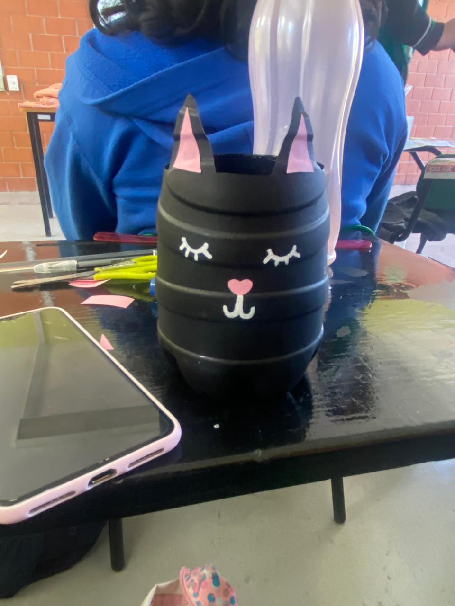
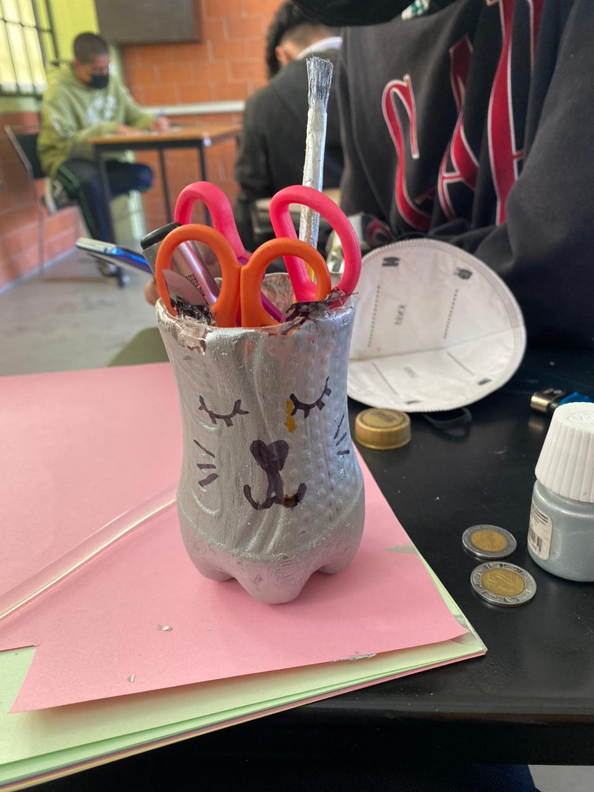
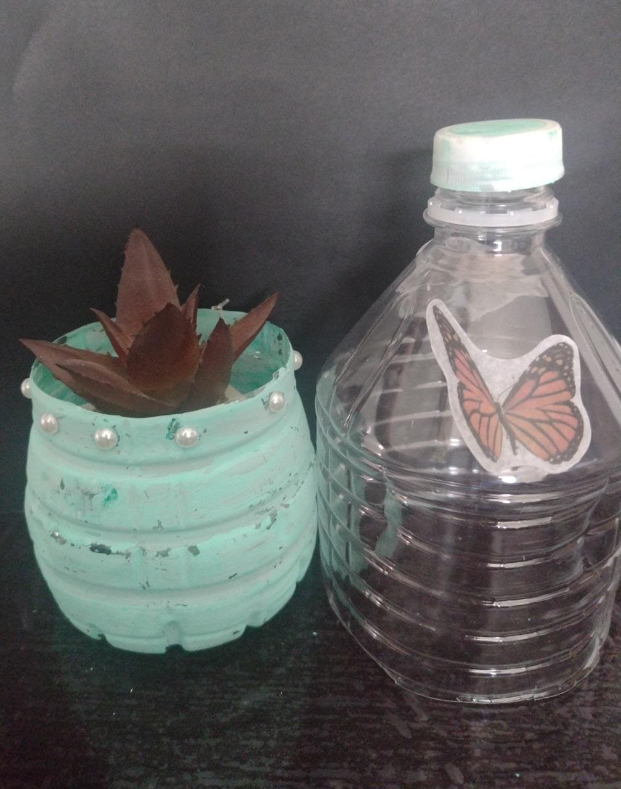
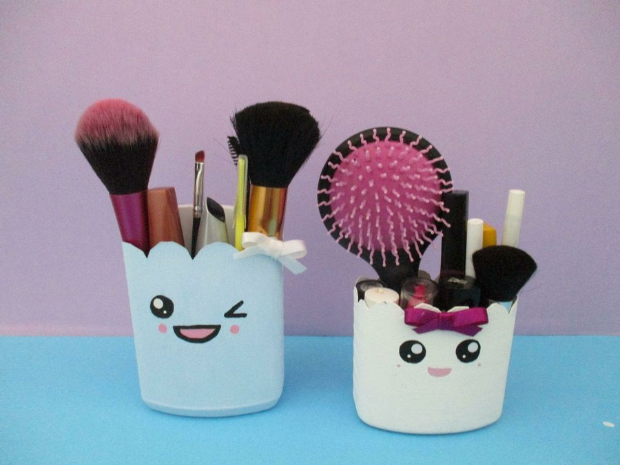
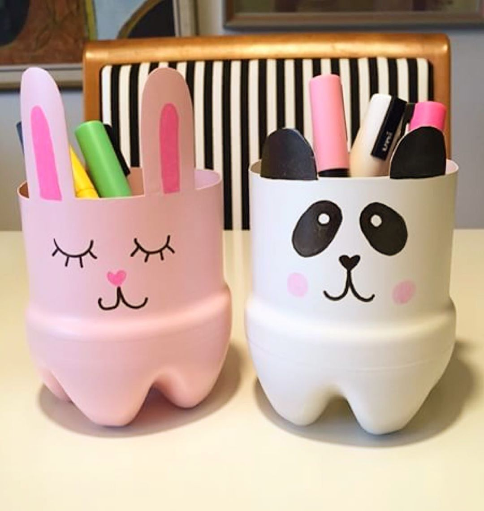

En esta pagina de ecología aprendimos mucho sobre el reciclaje asi que utilizaremos una de las tres erres(3R) que es el RECICLAGE, asi como lo escuchas, el reciclage nos ha ayudado a toda la humanidad en uno que otro momento. Un claro ejemplo es cuando usamos las botellas de plástico para realizar manualidades o el carton, pero eso es para otra ocasión.
Como actividad el dia de hoy es el realizar una manualidad con "BOTELLAS DE PLÁSTICO", asi como escuchaste, las botelas de plástico no solo se pueden ocupar para meter liquidos dentro de ellas, nosotros pensamos que ellas solo tienen un uso y es el portar algun liquido que nosotros ocupemos pero no, no es así. Pongamonos manos a la obra y realizemos nuestra actividad del día.
Visualiza el siguiente video y realiza tu manualidad reciclable. RECUERDA que todo tu material debe de ser reutilizado para esta manualidad
Como pudiste apreciar en el video, los plásticos o más bien las botellas de plásticos que solo ocupamos por un mnimo de tiempo les podemos dar un uso mayor a el que esta estipulado su creación. A continuación les dejaremos unas fotos de las actividades que realizaron algunos usuarios.
|  |  |  |  |  |
Muchas gracias por quedarte hasta el final y poder ser parte del cambio para este planeta, recuerda que nosotros podemos hacer el cambio con pequeñas acciones. Cualquier duda o sugerencia para nuestra pagina, contactanos a nuestras redes sociales y danos tus sugerencias o cambios para esta gran marca, MUCHAS GRACIAS POR SU ATENCIÓN:)